Astronomy 12
-

Reasons for Seasons
Earth's tilted axis, the Sun's path across your sky, day length and sunlight through the year, and why distance from the Sun is not the reason.
-

Moon Phases
Drag the Moon around Earth and see its phase from the ground, when it rises and sets, and why eclipses only happen in eclipse seasons.
-

Kepler's Laws
Launch a planet by dragging its velocity arrow. Watch ellipses form, equal areas sweep out in equal times, and the orbit land on P² = a³/M with the real planets.
-

Stellar Evolution
Follow a star of any mass across the HR diagram from the main sequence to a cooling white dwarf or a supernova, and date a star cluster from its turnoff.
-

Finding Exoplanets
Watch a planet tug its star and cross its face, with the transit light curve and radial velocity curve drawing live. See why Earth twins are so hard to find.
-

Cosmic Distance Ladder
Measure a parallax from two photos, time a Cepheid's light curve, find a supernova's peak, and fit Hubble's law to galaxy redshifts. Each rung calibrates the next.
-

Tides
See why the Moon raises two ocean bulges, not one: subtract the pull at Earth's center from the pull everywhere else. Watch a city's tides over a day and spring and neap tides over a month.
-

Star Slice
Cut a real MESA star model in half and zoom from the envelope to the core: composition, convection zones, burning shells, and a white dwarf crystallizing from the center out.
-

Galaxy Rotation Curves
Stars far from a galaxy's center orbit as fast as those near it, though the visible matter says they should slow down. Build the curve from a bulge, disk, gas and a dark matter halo, measure it with Doppler shifts, and compare the Milky Way and NGC 3198.
-

Black Holes and Lensing
Slide a galaxy behind a lens to make an Einstein ring, watch a microlensing event brighten, ray trace a black hole's shadow exactly, and see what gravity does to clocks, light and a person near Sagittarius A* and a stellar black hole.
-

Lagrange Points
Drop or throw test particles in the rotating frame of two orbiting bodies: the five Lagrange points, zero velocity curves, Jupiter's Trojans, tadpole and horseshoe orbits, and halo style orbits near JWST's L2.
-

White Dwarf Cooling
Watch a white dwarf fade: Mestel's cooling law, the core freezing from the center out once the ion coupling reaches 175, the latent heat that slows it, the Gaia Q branch and white dwarfs as a cosmic clock.


Modern physics 17
-
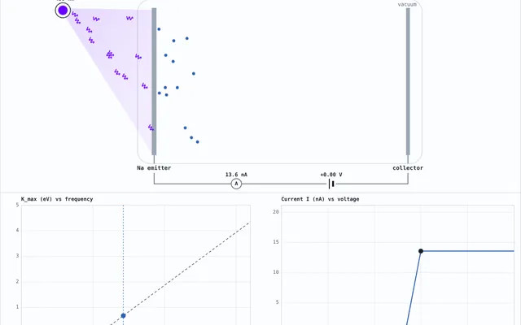
Photoelectric Effect
Shine light on a metal, find the stopping voltage, and measure Planck's constant from the slope, the way Millikan did in 1916.
-

Spectra Explorer
Click any of 99 elements to see its emission or absorption lines, measured by NIST. Includes the Bohr model of hydrogen and a mystery spectrum game, including a star.
-
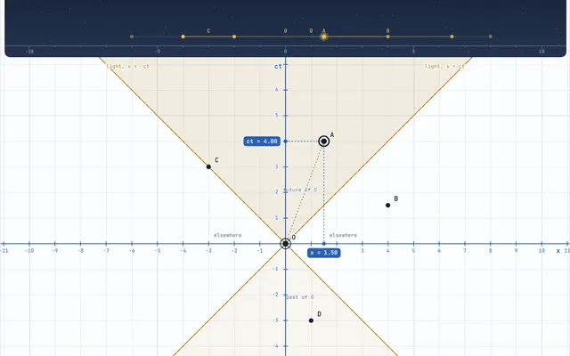
Spacetime Diagrams
Place events on a Minkowski diagram and change observers. Light cones stay at 45° while simultaneity, clocks and lengths change, through the train, the rod and the twin paradox.
-
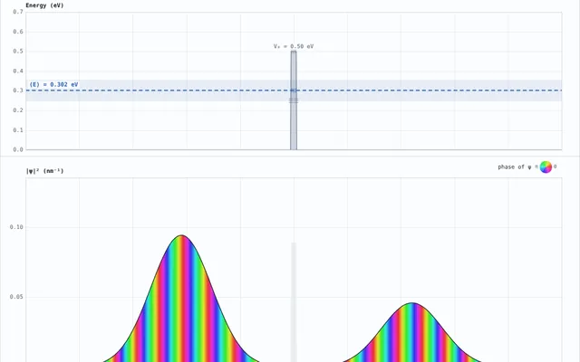
Quantum Wave Packets
Launch an electron at a barrier and watch part of it tunnel through, settle into energy eigenstates in a box or an oscillator, and collapse when you measure where it is.
-

Hydrogen Orbitals
Every hydrogen state up to n = 6 as a 3D cloud sampled from |ψ|², a slice showing its nodes, and its radial probability against the Bohr orbit. Mix 1s and 2p and watch the charge slosh at the Lyman α frequency.
-
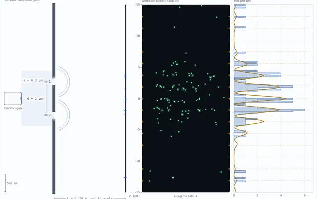
Double Slit, One Particle at a Time
Fire photons, electrons or buckyballs through two slits one at a time. Single dots pile up into fringes, and a which slit detector washes them out.
-

Radioactive Decay
A grid of nuclei that each decay at random, and a count that halves every half life anyway. Carbon 14 dating, iodine 131 and decay chains where a daughter builds up and dies away.
-
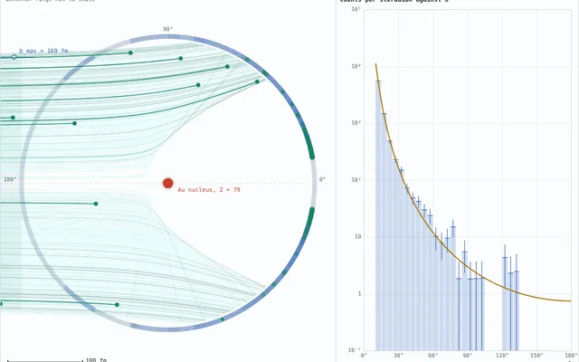
Rutherford Scattering
Fire alpha particles at a gold nucleus one at a time or as a beam, count them by angle against 1/sin⁴(θ/2), and see why Thomson's plum pudding atom can never send one back.
-
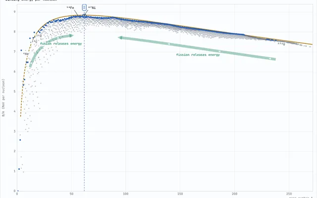
Nuclear Binding Energy
The curve of binding energy from 2,550 measured AME2020 masses: why fusing light nuclei and splitting heavy ones both release energy, why stars stop at iron, the liquid drop model term by term, magic numbers and the chart of nuclides.
-
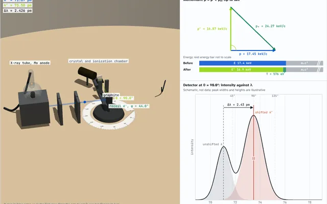
Compton Scattering
A photon bounces off a free electron and comes away with a longer wavelength. Drag the scattered photon around to see the shift, the electron's recoil and the momentum triangle, from Compton's 1923 x rays to cesium 137 gamma rays and the Compton edge.
-
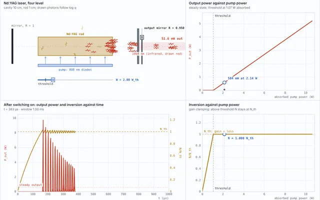
Lasers and Stimulated Emission
A photon can make an excited atom emit an exact copy of itself. See why there is no laser without population inversion, find the threshold of an Nd:YAG laser, watch it spike as it switches on, compare ruby, Nd:YAG and He–Ne levels, and count cavity modes.
-
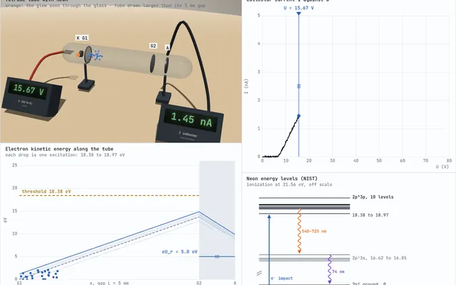
Franck–Hertz Experiment
Sweep the accelerating voltage across a mercury tube and watch the collector current drop every 4.9 V, then mark the peaks and fit their spacing like in the lab. Switch to neon to see glowing layers march toward the cathode.
-
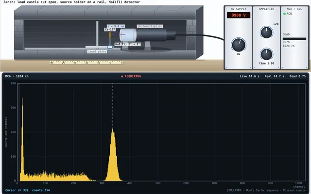
Gamma Spectroscopy
A virtual NaI(Tl) spectrometer in a lead castle: set the high voltage and gain, acquire Cs-137, Co-60, Na-22 or Ba-133 spectra on a multichannel analyzer, mark peaks, calibrate, measure resolution and lead attenuation, and identify an unknown source.
-
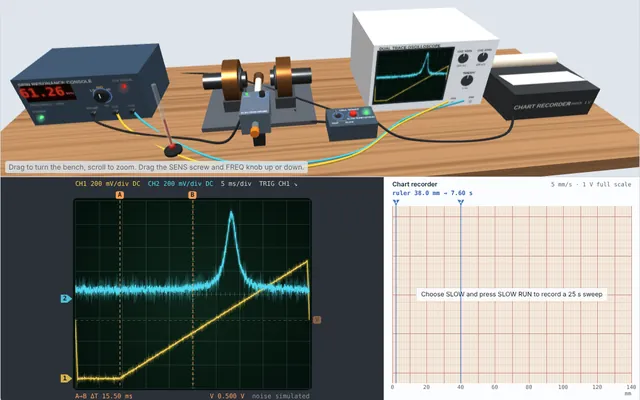
Spin Resonance
Tune an electron or proton spin resonance probe, sweep the field, find the absorption peak on the oscilloscope, and measure g for DPPH and the gyromagnetic ratios of hydrogen and fluorine.
-
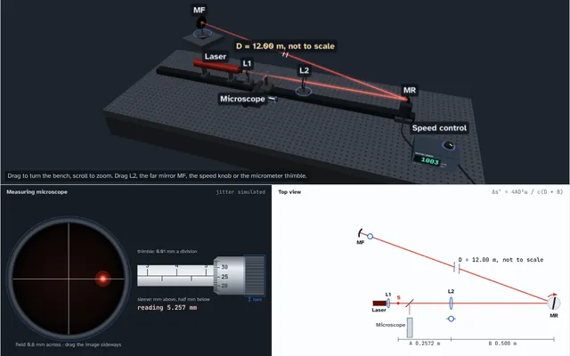
Speed of Light
Foucault's rotating mirror bench: spin the mirror, read the shifted image on the microscope micrometer, and fit your readings for c.
-
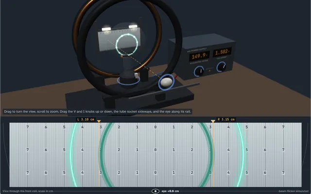
e/m of the Electron
Bend an electron beam into a glowing circle with Helmholtz coils, read its radius on the mirrored scale without parallax, and measure the charge to mass ratio.
-
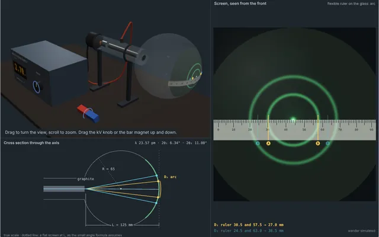
Electron Diffraction
Fire electrons through graphite, measure the two rings on the tube's screen at several voltages, and find the lattice spacings from de Broglie's λ = h/p.


Mechanics 8
-

Projectile Range
Fire baseballs, ping pong balls, cannonballs and more with and without air resistance, stack up to eight shots of different mass, size, drag or air density, and compare their paths and x, y and speed graphs side by side.
-

Springs and Oscillations
Pull a mass on a spring and let go: simple harmonic motion, a period that ignores the amplitude, three kinds of damping, a driven oscillator sweeping through resonance, and two coupled masses trading energy in beats.
-

Potential Energy Curves
Read motion off a graph of U(x): drag the energy line and watch the particle speed up, slow down and turn around. Springs, roller coasters, a double well, a molecule, a pendulum, or a curve you draw yourself, with phase space.
-

Rotation and Torque
Push a door near the hinge and at the handle, race a hoop, disk and sphere down a ramp, spin a skater who pulls her arms in, and balance a seesaw.
-

Hanging Chains and Arches
Drag the ends of a hanging chain and compare its catenary with a parabola, follow the tension along it, then flip it into an arch that stands in pure compression, like the Gateway Arch.
-

Collisions and Momentum
Crash carts on an air track and pucks on an air table: momentum is always conserved, kinetic energy only when the bounce is elastic. Also an explosion, Newton's cradle, and why a soft bumper lowers the peak force for the same impulse.
-

Pendulums and Chaos
Big swings take longer than the small angle formula says. Hang a second pendulum from the first for normal modes at low energy and chaos at high energy: 100 copies a millionth of a radian apart fan out, and a Poincaré section shows islands in a chaotic sea.
-

Fluids: Pressure, Buoyancy and Flow
Drag a pressure probe down a tank, drop blocks that float or sink, weigh one in an overflow can like Archimedes, see an iceberg float 89% under, watch a Venturi tube trade pressure for speed, and aim Torricelli's jet.


Thermodynamics 3
-

Blackbody Radiation
Explore thermal emission across temperatures, test Planck’s spectrum, Wien’s displacement law and Stefan–Boltzmann scaling, and connect the results to visible color.
-

Gas in a Box
Watch pressure and temperature emerge from molecules hitting the walls, speeds relax to Maxwell-Boltzmann, and a moving piston heat the gas.
-
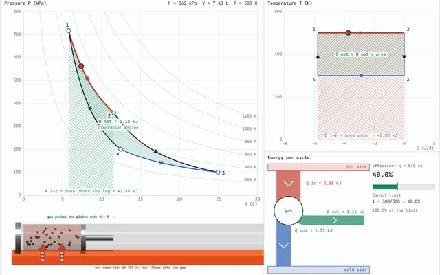
Heat Engine Cycles
Run an ideal gas around Carnot, Otto, Diesel, Stirling and Brayton cycles, or drag your own: the PV loop's area is the net work, a T–S diagram shows the heat, and no engine beats the Carnot limit. Reverse it for a refrigerator.


Electricity and magnetism 8
-

Coulomb Sandbox
Drag point charges and watch the field lines, equipotentials and potential update live, as a 2D map or a rotatable 3D landscape.
- Kirchhoff's loop rule
- capacitor energy
- exponential decay


Charges in Magnetic Fields
Launch protons, electrons and alphas into a magnetic field and watch them circle at a period that doesn't depend on speed. Build a velocity selector, a mass spectrometer that separates neon isotopes, and a cyclotron.

Faraday's and Lenz's Laws
Push a magnet into a coil and watch the flux, EMF and current, with the coil pushing back. Move it fast or slow and the same total charge flows. Spin a generator coil and slide a bar along rails.

Gauss's Law
Drag charges in and out of a Gaussian surface of any shape and watch the flux: Qenc/ε₀ from a real numerical surface integral, zero for charges outside. Then the sphere, line and plane derivations step by step.

Magnetic Fields of Currents
Drag wires and watch their fields add and the forces between them, test Ampère's law on any loop with a numerical integral, and bend the current into a loop or a solenoid computed exactly from Biot–Savart.

Electromagnetic Waves
A plane wave in 3D with E, B and the Poynting vector, polarization from linear to circular, the energy and pressure of sunlight and a laser, the full spectrum, and a dipole antenna launching waves with exact field lines.

Capacitors and Dielectrics
Pull the plates apart and slide in a dielectric with the battery connected or not, and follow Q, V, E, C and the energy, including the work your hand does. Field lines come from a real solution with fringing at the edges.

Circuits
Everything in one place: build DC circuits with batteries, bulbs and meters, charge a capacitor through a resistor, drive an RLC circuit to resonance, and watch circuits ring down on their own.
Waves and sound 2
-
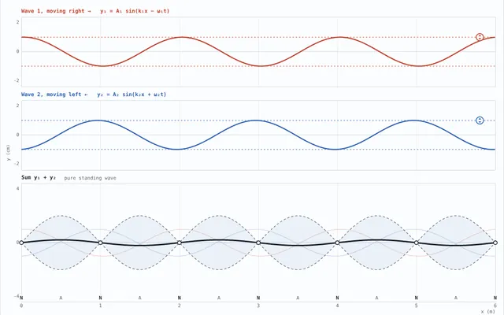
Standing Waves
Add two traveling waves into a standing wave, find the harmonics of a guitar string, drive it into resonance, pluck it and see which harmonics vanish, compare open and closed pipes, hear two close tones beat, and float beads at the pressure nodes of a 40 kHz acoustic levitator.
-
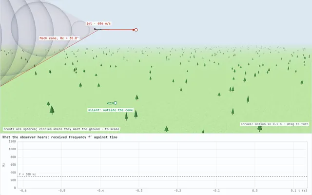
Doppler Effect and Shock Waves
Drag a source and an observer through the wavefronts: hear an ambulance's pitch fall as it passes, break the sound barrier into a Mach cone and a sonic boom, then switch to light for redshift, blueshift and the transverse Doppler effect.
Optics 4
-

Optics Bench
Drag lenses, mirrors, prisms and light sources. Rays bend and bounce live, and images form where they cross.
-

Polarization
Send light through polarizers and wave plates and watch the electric field after each one: Malus's law, the three polarizer surprise, circular light from a quarter wave plate, and glare at Brewster's angle.
-
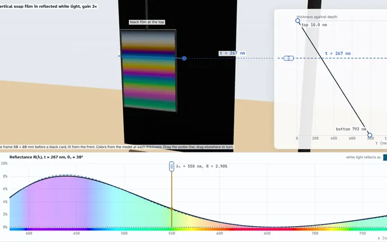
Thin Film Interference
See why soap bubbles and oil slicks are colored: two reflections from a thin film add or cancel, computed exactly with the reflected color of white light, plus the black film, air wedge fringes, Newton's rings and anti reflection coatings.
-
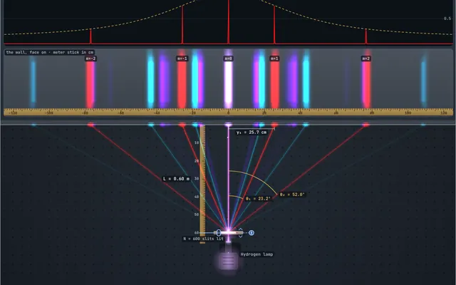
Diffraction Grating
Shine lasers, an RGB module, white light or H, He, Ne, Hg and Na lamps through gratings from 100 to 1000 lines/mm, a CD or a DVD. See the orders land on the wall, overlapping rainbows and missing orders, then measure a spot with calipers to find the wavelength.


No demos match .